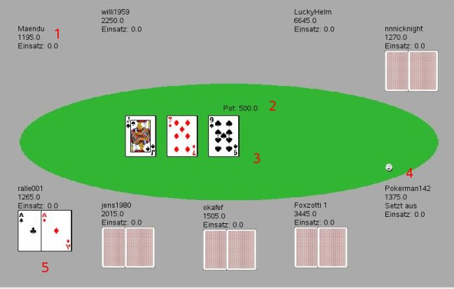

|
 |
Im Hauptfenster wird der aktuelle Tisch angezeigt. Dabei sind folgende Bereiche wichtig:
Die Spieler am Tisch, die in der Hand sind. Zu jedem Spieler
werden einige Informationen angezeigt:
- Der Name
- Der
aktuelle Chipstapel. Dieser wird mit jedem Einsatz verringert
-
Der in dieser Setzrunde getätigte Einsatz
- Die Karten wenn
der Spieler noch nicht gefoldet hat
- Einen Hinweis wenn der
Spieler aussetzt
Der aktuelle Pot.
Dieser wird jedes mal wenn ein Spieler
etwas setzt erhöht.
Die Board- oder Gemeinschaftskarten
Mit dem Flop, Turn und
River werden hier nacheinander die entsprechenden Karten angezeigt.
Der Button
Die Karten des Spielers
Diese werden solange angezeigt,
bis der Spieler foldet